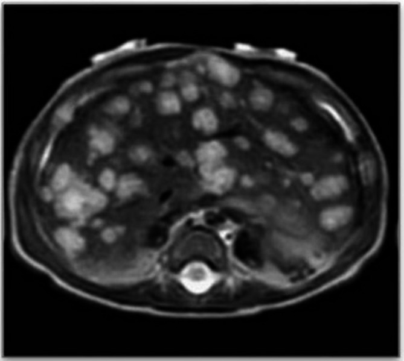
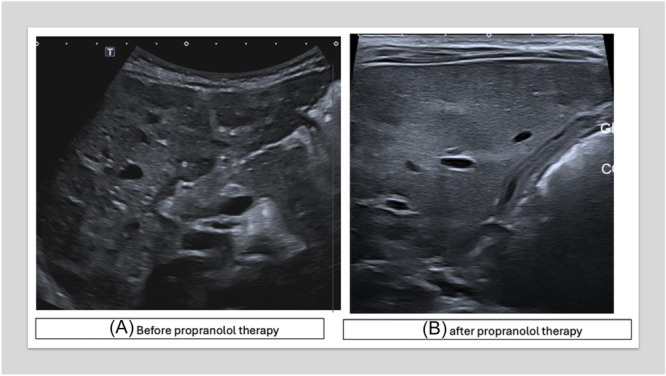

3048 — U máu gan ở nhũ nhi (infantile hepatic hemangioma): suy tim do shunt, suy giáp tiêu thụ & khi nào propranolol
Tags: pattern:u-mau-gan pattern:nhieu-o-gan pattern:shunt-dong-tinh-mach vung:gan anatomy:gan protocol:Sieu-am-Doppler protocol:MRI-gan protocol:propranolol incidentaloma:u-mau-gan
Mức chắc chắn (certainty): tổng hợp y văn (literature synthesis) — ghép 87 trẻ u máu gan (J Clin Med 2024, PMC11122465), ca u máu gan lan tỏa + suy giáp tiêu thụ kèm tổng quan 64 ca (Ital J Pediatr 2025, PMC12186321), ca u máu gan đa ổ + suy tim cung lượng cao (JPGN Reports 2026, PMC13398648), ca u máu gan lan tỏa điều trị propranolol đơn thuần (Front Oncol 2024, PMC10859491). Không có ca do nhóm tự chụp.
Câu hỏi thực hành: bé trai 2 tháng tuổi, 10 u máu da nhỏ, bú kém, chướng bụng, gan to; siêu âm thấy vô số ổ giảm âm trong gan, MRI nhiều nốt T2 sáng gần thay toàn bộ nhu mô gan. Câu hỏi: có phải di căn/u ác không, có cần sinh thiết không, và vì sao phải xét nghiệm tuyến giáp + tim? Bài chốt ba quyết định: (1) ≥ 5 u máu da + gan to = siêu âm gan, nghĩ u máu gan nhũ nhi (IHH); (2) IHH đa ổ/lan tỏa có thể gây suy tim cung lượng cao do shunt và suy giáp tiêu thụ do D3 — phải đo TSH/fT4/rT3 và siêu âm tim; (3) propranolol 2–3 mg/kg/ngày là điều trị đầu tay, không sinh thiết khối điển hình. Nối 3005 – U máu dưới thanh môn, 630 – Khối u đặc ổ bụng trẻ em, 1804 – Suy giáp tiêu thụ do D3 lạc vị, 674 – U quái gan.
1. Tổng quan bệnh học – cơ chế hình ảnh: vì sao “u máu gan” không phải một bệnh
- Phân loại trước khi chẩn đoán: u mạch máu gan ở trẻ gồm u mạch máu nhũ nhi (infantile hemangioma, IH) — GLUT1 dương, xuất hiện sau sinh, tăng sinh 3–9 tháng, thoái triển chậm trong nhiều năm — và u mạch máu bẩm sinh (congenital hemangioma, CH) — GLUT1 âm, đã tối đa kích thước lúc sinh, gồm RICH (thoái triển nhanh), NICH (không thoái triển) và PICH (thoái triển một phần). Trong gan, IH thường đa ổ (multifocal) hoặc lan tỏa (diffuse); tổn thương một ổ (focal) ở gan thường là CH hơn là IH thật — đây là cạm bẫy phân loại hay gặp.
- Tần suất – định lượng: u máu gan gặp 0,64/10.000 trẻ sinh sống trong một loạt đơn trung tâm lớn; khoảng 8,6% u gan ở trẻ xuất hiện trước 2 tháng tuổi, và 60% trong số đó là u máu gan (PMC11122465). IHH là u mạch máu nội tạng hay gặp nhất ở nhũ nhi, thường đi kèm u máu da.
- Phân loại theo số lượng – quyết định biến chứng:
- Một ổ (focal): thường không triệu chứng, ít shunt; nhiều khả năng là CH.
- Đa ổ (multifocal): nhiều ổ, có thể kèm ≥ 5 u máu da; nguy cơ shunt động–tĩnh mạch → suy tim cung lượng cao và suy giáp tiêu thụ.
- Lan tỏa (diffuse): vô số ổ thay gần toàn bộ nhu mô gan, gan to nhanh, nguy cơ hội chứng khoang bụng, suy tim, suy giáp, chảy máu — nhóm nặng nhất.
- TẠI SAO có shunt và suy tim: các ổ u mạch máu có mao mạch lớn, dòng chảy thấp–trung bình nhưng tổng lưu lượng cao; khi u lớn/đa ổ, máu từ động mạch gan đi tắt qua u vào tĩnh mạch gan → shunt động–tĩnh mạch trong gan → tăng cung lượng tim, giảm sức cản hệ thống, suy tim cung lượng cao. Ca minh họa có gradient qua đường ra thất phải 18 mmHg trước điều trị, giảm còn 9 mmHg sau propranolol (PMC13398648).
- TẠI SAO suy giáp: u mạch máu biểu hiện deiodinase type 3 (D3) — enzyme chuyển T4 → reverse T3 (rT3) và T3 → T2 (bất hoạt). U càng lớn, càng nhiều D3 → tiêu thụ hormone tuyến giáp ngoại vi → TSH tăng, fT4/fT3 thấp hoặc bình thường, rT3 tăng. Đây là suy giáp tiêu thụ (consumptive hypothyroidism) — không phải suy giáp do tuyến giáp, nên liều LT4 thường cao hơn nhiều.
- TẠI SAO hình ảnh là “nhiều ổ giảm âm/T2 sáng”: trên siêu âm, các ổ là mô mạch máu đặc, đồng nhất, giàu tế bào nội mô nên giảm âm so với nhu mô gan; Doppler thấy dòng chảy trong ổ và tăng lưu lượng ở động mạch gan/tĩnh mạch gan. Trên MRI, các ổ có khoang mạch máu chậm dòng/giãn chứa nhiều nước → T2 rất sáng; sau tiêm, ngấm mạnh thì động mạch và duy trì thì muộn do máu ứ trong khoang mạch, không thải thuốc kiểu HCC. Đây là lý do T2 sáng + ngấm mạnh kéo dài gợi u mạch máu, không gợi u ác.
- Ngưỡng kích thước và nguy cơ: khối > 4 cm được coi là u máu gan lớn, có nguy cơ biến chứng; trong loạt 87 trẻ, 5/87 (5,7%) có u lớn > 4 cm và tất cả đều có triệu chứng (PMC11122465). Gan to + bụng chướng + suy dinh dưỡng là dấu hiệu “u lớn có triệu chứng”, không phải “u lành theo dõi được”.
- Tiên lượng – con số cần nhớ: u nhỏ không triệu chứng thường thoái triển hoàn toàn; u lớn có triệu chứng, đặc biệt lan tỏa + suy tim + suy giáp, có thể tử vong. Loạt 87 trẻ ghi nhận 60% thoái triển hoàn toàn ở nhóm điều trị; y văn cũ nêu tử vong 30–100% ở u máu gan có biến chứng nếu không điều trị (PMC11122465 dẫn lại) — con số này dùng để giải thích mức độ nguy hiểm, không dùng tiên lượng cá nhân.
- AFP — không phải “ung thư” là xong: AFP có thể tăng rất cao trong IHH (trung vị 76.818,7 ng/mL ở nhóm điều trị so với 627,2 ở nhóm theo dõi) và giảm nhanh trong 3 tháng đầu, gần như không đo được sau 6 tháng. Vì vậy AFP cao đơn thuần không loại trừ IHH; điều quan trọng là xu hướng giảm, còn AFP tăng dần mới gợi hepatoblastoma (PMC11122465).
2. Mẫu hình + chẩn đoán phân biệt theo số lượng, tuổi và biến chứng (Gamut)
- Theo số lượng: một ổ (focal) · đa ổ (multifocal) · lan tỏa (diffuse, thay gần toàn bộ gan). “Vô số ổ” trên siêu âm/MRI = lan tỏa, không phải “nhiều nốt đa ổ”.
- Theo tuổi:
- Sơ sinh – 1 tháng: CH (RICH/NICH) đã có kích thước tối đa lúc sinh; IHH có thể còn nhỏ và lớn dần sau sinh.
- 1–6 tháng: IHH đang tăng sinh mạnh, dễ suy tim/suy giáp; hepatoblastoma cũng ở nhóm tuổi này (nhưng AFP tăng và khối đặc không đồng nhất).
- 6 tháng–3 tuổi: hepatoblastoma, mesenchymal hamartoma, di căn neuroblastoma; IHH thường đã qua đỉnh và bắt đầu thoái triển.
- Theo biến chứng — “5C”: Cutaneous (≥ 5 u máu da) · Cardiac failure (shunt) · Compartment syndrome (hội chứng khoang bụng) · Consumptive hypothyroidism (D3) · Compression (chèn ép đường mật/tiêu hóa).
- Gamut chính: IHH đa ổ/lan tỏa · CH (RICH/NICH) · hepatoblastoma · mesenchymal hamartoma · kaposiform hemangioendothelioma (KHE) · di căn neuroblastoma · áp-xe gan · nang gan đơn thuần.
- Điểm khác biệt cốt lõi: IHH có u máu da + gan to + shunt/suy giáp, hepatoblastoma có AFP tăng dần + khối đặc không đồng nhất + vôi hóa, KHE có giảm tiểu cầu/coagulopathy (Kasabach–Merritt), CH có kích thước tối đa lúc sinh và tự thoái triển.
3. Bảng so sánh phân biệt (ma trận đối chiếu)
| Thực thể (entity) | Hình ảnh điển hình | Chốt vào (rule-in) | Chốt loại (rule-out) | Gợi ý xác nhận |
|---|---|---|---|---|
| IHH đa ổ/lan tỏa | Nhiều ổ giảm âm trên siêu âm, T2 rất sáng, ngấm mạnh thì động mạch và duy trì; gan to; Doppler tăng lưu lượng | ≥ 5 u máu da + gan to + nhiều ổ T2 sáng + AFP giảm dần | Khối đặc không đồng nhất, vôi hóa thô, AFP tăng dần → nghĩ hepatoblastoma | Siêu âm Doppler + MRI gan; TSH/fT4/rT3; siêu âm tim |
| CH (RICH/NICH) | Một ổ lớn, bờ rõ, có thể hoại tử/xuất huyết trong u; ngấm từ ngoại vi vào trung tâm ở RICH | Đã tối đa kích thước lúc sinh + GLUT1 âm + tự thoái triển (RICH) | Lớn dần sau sinh, nhiều ổ, kèm u máu da → IHH | Siêu âm/MRI theo dõi; sinh thiết chỉ khi không điển hình |
| Hepatoblastoma | Khối đặc không đồng nhất, vôi hóa 40–50%, có thể xâm lấn tĩnh mạch cửa; AFP rất cao | AFP tăng dần + khối đặc + vôi hóa + tuổi 6 tháng–3 tuổi | Nhiều ổ T2 sáng đều, AFP giảm dần, có u máu da → IHH | AFP + MRI/CT; sinh thiết trước hóa trị |
| Mesenchymal hamartoma | Khối đa nang, vách mỏng, dịch; có thể chiếm cả thùy | Khối nang nhiều vách + AFP bình thường + trẻ < 2 tuổi | Khối đặc ngấm mạnh, nhiều ổ nhỏ → IHH | MRI/CT; sinh thiết nếu chẩn đoán không rõ |
| KHE (kaposiform hemangioendothelioma) | Khối mờ, xâm lấn, mô mềm quanh gan, giảm tiểu cầu nặng | Giảm tiểu cầu + coagulopathy (Kasabach–Merritt) + tổn thương mờ xâm lấn | Tiểu cầu bình thường, nhiều ổ rõ, T2 sáng đều → IHH | Công thức máu, đông máu, MRI; sinh thiết |
| Di căn neuroblastoma | Nhiều nốt gan, thường có khối nguyên phát thượng thận, di căn xương/tủy | Khối thượng thận + catecholamine/metanephrine tăng + nốt gan | Không có u nguyên phát, có u máu da, AFP giảm → IHH | CT/MRI bụng–ngực, MIBG, xét nghiệm catecholamine |
| Áp-xe gan | Ổ dịch hoại tử, viền ngấm, có thể khí trong ổ; sốt cao | Sốt + đau bụng + bạch cầu tăng + ổ viền ngấm | Không sốt, nhiều ổ T2 sáng đều, đáp ứng propranolol → IHH | Siêu âm/CT, cấy máu; dẫn lưu nếu ổ lớn |
 Bé trai 2 tháng tuổi, 10 u máu da, gan to. Siêu âm: gan hơi to, vô số ổ giảm âm–đồng âm, đường kính trung bình 15 mm, bờ rõ — hình ảnh IHH lan tỏa. Nguồn: Ital J Pediatr 2025 (PMC12186321), CC BY 4.0, nguyên bản.
Bé trai 2 tháng tuổi, 10 u máu da, gan to. Siêu âm: gan hơi to, vô số ổ giảm âm–đồng âm, đường kính trung bình 15 mm, bờ rõ — hình ảnh IHH lan tỏa. Nguồn: Ital J Pediatr 2025 (PMC12186321), CC BY 4.0, nguyên bản.

Cùng bệnh nhân: MRI T2W thấy nhiều nốt tăng tín hiệu mạnh, đường kính tối đa 20 mm, phân bố rải rác gần như thay toàn bộ nhu mô gan — tương ứng thể lan tỏa. T2 sáng do khoang mạch máu chậm dòng chứa nhiều nước, không phải mỡ. Nguồn: Ital J Pediatr 2025 (PMC12186321), CC BY 4.0, nguyên bản.4. Protocol chẩn đoán – điều trị – theo dõi
- Bước 1 — sàng lọc bằng siêu âm bụng: theo AAP, trẻ có ≥ 5 u máu da cần siêu âm gan để tìm IHH nội tạng; cân nhắc siêu âm cả khi < 5 u máu da nhưng có gan to, suy dinh dưỡng, suy tim, vàng da. Siêu âm là đầu tay, không cần chuẩn bị đặc biệt, không xạ.
- Bước 2 — siêu âm Doppler + MRI gan khi cần: siêu âm mô tả số ổ, kích thước, giảm âm, dòng chảy trong ổ, tăng lưu lượng động mạch gan. MRI (T2 + DCE) khi không rõ số ổ, nghi CH/u ác, cần đo thể tích gan. CT chỉ khi MRI không khả dụng hoặc cần đánh giá mạch; tránh xạ ở trẻ nhỏ nếu không cần.
- Bước 3 — xét nghiệm bắt buộc:
- Công thức máu + đông máu: tìm giảm tiểu cầu/coagulopathy (KHE/Kasabach–Merritt).
- AFP: nền và theo dõi xu hướng; AFP cao có thể gặp trong IHH, nhưng tăng dần gợi hepatoblastoma.
- TSH, fT4, fT3, rT3: tầm soát suy giáp tiêu thụ ở mọi trẻ IHH lan tỏa/đa ổ; TSH cao + rT3 cao + fT4 thấp/bình thường là chìa khóa.
- Siêu âm tim: tìm suy tim cung lượng cao, giãn nhĩ/thất, tăng gradient đường ra thất phải; đo RVOT VTI/gradient làm marker theo dõi.
- Bước 4 — điều trị theo mức độ:
| Mức độ | Điều trị | Số liệu / lưu ý |
|---|---|---|
| Không triệu chứng, u nhỏ < 4 cm, không shunt | Theo dõi bằng siêu âm mỗi 3–6 tháng | Phần lớn thoái triển; loạt 87 trẻ: nhóm theo dõi 75 trẻ, không u nào > 4 cm |
| Có triệu chứng / u > 4 cm / shunt / suy giáp | Propranolol 1–3 mg/kg/ngày, thường 2–3 mg/kg/ngày chia 2–3 lần | Đáp ứng trong vài ngày đến 4 tuần; ca 8,5 tháng: gan giảm, suy tim hết sau 4 tuần, gradient RVOT 18 → 9 mmHg |
| Không đáp ứng propranolol | Corticosteroid (prednisolone 1–2 mg/kg/ngày) ± sirolimus 1,6 mg/m²/ngày | Dùng trong loạt 87 trẻ; theo dõi nhiễm trùng, tăng đường huyết |
| Shunt lớn/suy tim khó kiểm soát | Nút mạch (embolization) ± phẫu thuật | Cầu nối trước mổ; nguy cơ nhồi máu gan, chảy máu |
| U lớn chèn ép, vỡ, không đáp ứng | Cắt u/cắt gan hoặc ghép gan | Ca lan tỏa nặng có thể cần ghép; trong 64 ca suy giáp, 18,75% cần mổ/ghép |
| Suy giáp tiêu thụ | LT4 liều cao, trung bình 24,04 mcg/kg/ngày (dải 1–110), ± liothyronine | 92,85% ca trong tổng quan cần LT4; 28,8% cần thêm liothyronine; propranolol có thể làm giảm nhu cầu LT4 |
- Theo dõi propranolol: đo nhịp tim, huyết áp, glucose trước và sau liều đầu; cho bú đều, tránh bỏ bữa (nguy cơ hạ đường huyết); thận trọng ở trẻ sinh non/nhẹ cân/hen. Không ngừng đột ngột — giảm liều từ từ sau khi u thoái triển để tránh bùng phát/tái phát.
- Theo dõi dài hạn: siêu âm mỗi 3–6 tháng trong năm đầu, sau đó 6–12 tháng đến khi hết; theo dõi AFP, TSH/fT4 cho đến khi bình thường; đánh giá tăng trưởng, tim, phát triển.
flowchart TD
A[Trẻ có >= 5 u máu da hoặc gan to] --> B[Siêu âm gan + Doppler]
B --> C{Nhiều ổ giảm âm/T2 sáng?}
C -->|Không| D[Xét hepatoblastoma, CH, hamartoma, KHE, áp-xe]
C -->|Có| E[Xét AFP, công thức máu, đông máu, TSH/fT4/rT3, siêu âm tim]
E --> F{Có suy tim, suy giáp, u > 4 cm hoặc lan tỏa?}
F -->|Không| G[Theo dõi siêu âm 3-6 tháng; AFP/TSH định kỳ]
F -->|Có| H[Propranolol 2-3 mg/kg/ngày + điều trị suy giáp/suy tim]
H --> I{Đáp ứng sau 2-4 tuần?}
I -->|Có| J[Tiếp tục 6-12 tháng rồi giảm liều từ từ]
I -->|Không| K[Corticosteroid ± sirolimus; nút mạch; cắt u/ghép gan]
J --> L[Theo dõi tái phát, tăng trưởng, tuyến giáp]

Bé gái 8,5 tháng, IHH đa ổ + suy tim cung lượng cao (gradient RVOT 18 mmHg), điều trị propranolol 2 mg/kg/ngày. (A) trước điều trị: nhiều ổ giảm âm; (B) sau điều trị: gan gần như bình thường, u thoái triển rõ. Nguồn: JPGN Reports 2026 (PMC13398648), CC BY-NC-ND 4.0, nguyên bản.5. Biến thể bình thường và cạm bẫy
- Bẫy 1 — gọi mọi “hemangioma gan” là IHH: tổn thương một ổ ở gan thường là CH (RICH/NICH), đã tối đa lúc sinh và tự thoái triển; điều trị/tiên lượng khác IHH. Đừng mặc định “u máu = propranolol”.
- Bẫy 2 — sinh thiết khối điển hình: IHH là tổn thương mạch máu, sinh thiết có thể chảy máu nặng; chẩn đoán dựa vào lâm sàng + siêu âm/MRI + AFP/TSH + đáp ứng propranolol. Chỉ sinh thiết khi không điển hình hoặc nghi u ác.
- Bẫy 3 — AFP cao = ung thư: AFP có thể 76.818 ng/mL trong IHH và giảm dần; xu hướng quan trọng hơn một giá trị tuyệt đối. AFP tăng dần mới đáng lo.
- Bẫy 4 — bỏ sót suy giáp tiêu thụ: trẻ có thể chỉ bú kém, chậm tăng cân, táo bón, ngủ nhiều; không đo TSH/fT4/rT3 sẽ bỏ sót. Trong 64 ca, 92,85% cần LT4, liều trung bình 24,04 mcg/kg/ngày — cao hơn suy giáp thường.
- Bẫy 5 — nhầm suy tim do shunt với viêm phổi/nhiễm trùng: ca 8,5 tháng được chẩn đoán ban đầu là viêm tiểu phế quản, chỉ phát hiện tim to + suy tim cung lượng cao khi chụp ngực. Luôn nghe tim, đo gan, siêu âm tim ở trẻ IHH gan to.
- Bẫy 6 — Kasabach–Merritt không phải IHH: KHE mới gây giảm tiểu cầu + coagulopathy; IHH thường không gây KMP. Gọi KMP cho IHH dẫn tới điều trị sai (steroid/embolization thay vì propranolol).
- Bẫy 7 — propranolol gây hạ đường huyết: trẻ nhỏ, sinh non, bú kém; cho bú đều, đo glucose, không bỏ bữa; ngừng thuốc đột ngột có thể bùng phát u.
- Bẫy 8 — “nhiều nốt” không đồng nghĩa di căn: ở trẻ có u máu da, nhiều nốt T2 sáng đều trong gan là IHH, không phải di căn; nhưng nếu có khối thượng thận hoặc AFP tăng dần, phải tìm neuroblastoma/hepatoblastoma.
6. Tự lượng giá — Blind Quiz
Ca 1 — Bé trai 2 tháng tuổi, 10 u máu da, gan to, bú kém.
- Câu hỏi 1: Mô tả hình ảnh siêu âm. Vì sao phải xét nghiệm TSH, fT4, rT3?
Bấm để hiện đáp án (findings + chẩn đoán)
- Dấu hiệu (findings): gan hơi to, vô số ổ giảm âm–đồng âm, bờ rõ, đường kính trung bình 15 mm, phân bố khắp gan.
- Chẩn đoán (diagnosis): IHH lan tỏa (thể diffuse) — nhiều ổ thay gần toàn bộ nhu mô.
- Vì sao xét nghiệm tuyến giáp: u mạch máu biểu hiện D3, chuyển T4→rT3, gây suy giáp tiêu thụ; ca này TSH 33,05 mU/L, rT3 2 ng/mL, fT4 16,8 pg/mL — TSH cao + rT3 cao là chìa khóa.
- Nguồn ảnh: Ital J Pediatr 2025 (PMC12186321), CC BY 4.0.
Ca 2 — Cùng bệnh nhân, MRI gan.
- Câu hỏi 2: Vì sao các nốt T2 rất sáng? Cần phân biệt với những gì, và dấu hiệu nào loại trừ u ác?
Bấm để hiện đáp án
- Dấu hiệu: nhiều nốt tăng tín hiệu mạnh trên T2, đường kính tối đa 20 mm, gần như thay toàn bộ nhu mô gan.
- Cơ chế: khoang mạch máu chậm dòng/giãn chứa nhiều nước → T2 sáng; sau tiêm ngấm mạnh và duy trì do ứ máu, không thải thuốc.
- Phân biệt: hepatoblastoma (khối đặc không đồng nhất, vôi hóa, AFP tăng dần), mesenchymal hamartoma (đa nang), KHE (giảm tiểu cầu), di căn neuroblastoma (có u thượng thận).
- Loại trừ u ác: u máu da + nhiều ổ T2 sáng đều + AFP giảm dần + đáp ứng propranolol.
- Nguồn ảnh: Ital J Pediatr 2025 (PMC12186321), CC BY 4.0.
Ca 3 — Bé gái 8,5 tháng, IHH đa ổ, suy tim cung lượng cao, trước và sau propranolol.
- Câu hỏi 3: Vì sao u máu gan gây suy tim? Theo dõi đáp ứng bằng dấu hiệu nào ngoài kích thước u?
Bấm để hiện đáp án
- Dấu hiệu: (A) nhiều ổ giảm âm trước điều trị; (B) sau propranolol, gan gần bình thường, u thoái triển rõ.
- Cơ chế suy tim: shunt động–tĩnh mạch trong gan → tăng lưu lượng, giảm sức cản hệ thống → suy tim cung lượng cao; ca này gradient RVOT 18 mmHg trước, 9 mmHg sau.
- Theo dõi: cân nặng, gan to, nhịp thở, siêu âm tim (gradient RVOT/VTI), không chỉ đo kích thước u; propranolol 2 mg/kg/ngày, cải thiện trong 4 tuần, gần hết sau 8 tháng.
- Nguồn ảnh: JPGN Reports 2026 (PMC13398648), CC BY-NC-ND 4.0.
Bài liên quan chéo
- 3005 – U máu dưới thanh môn ở nhũ nhi: rít HAI thì + propranolol
- 630 – Khối u đặc ổ bụng trẻ em: neuroblastoma vs Wilms
- 1804 – Suy giáp tiêu thụ do D3 lạc vị
- 674 – U quái gan ở trẻ
- 600 – Tổng quan Hệ Nhi khoa
Không dùng để chẩn đoán độc lập khi chưa có người hướng dẫn.